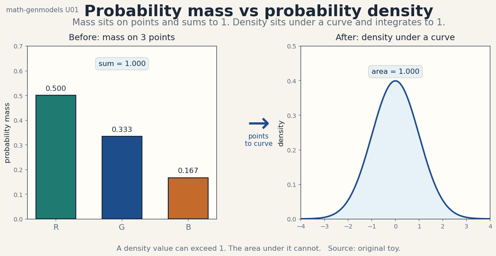
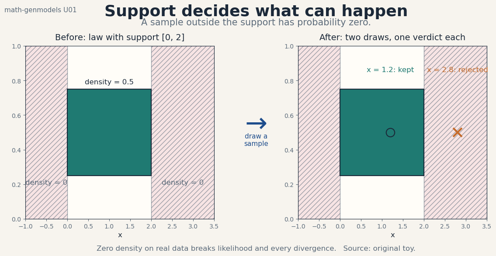
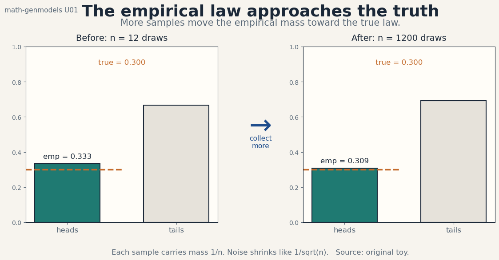
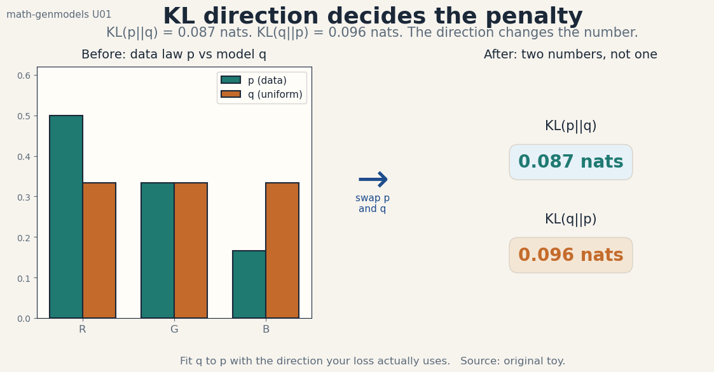

U01 · Probability, measures, and density estimation
Lesson U01: Probability, measures, and density estimation
Unit: math-genmodels-U01. Leaf concepts: math-genmodels-U01-C01 to C12. Date: 2026-10-06. Baseline: October 6, 2026.
Source mapping
This lesson is locally authored bridge content. It does not reproduce any instructor lecture. Source attribution for the leaf concepts is PENDING: SRC-01 is unresolved, SRC-04 was not retrieved, and SRC-03 notebooks and PDFs were not inspected (see source_manifest.md, source_gaps.md G1-G7). The mathematics below is standard textbook material restated as an independent bridge. Status of every leaf: PLANNED / SOURCE ATTRIBUTION PENDING.
Scope and objectives
Scope: the objects every generative model manipulates. Probability versus density, support, normalization, discrete and continuous variables, joint and marginal laws, sampling, likelihood, the empirical distribution, estimation, entropy, divergence, identifiability.
Objectives: after this lesson the learner can separate probability from density, state a support, normalize a law, move between joint and marginal forms, draw samples, score parameters with likelihood, build the empirical distribution, compute entropy and KL on a toy by hand, and spot a non-identifiable parameter.
Dependencies: P01, P06, P07, P08. Shared modules are linked in prerequisites.md. Each concept below still carries local remediation. No later unit is used.
The running toy
Twelve draws from a bag of colored balls. The counts are fixed for the whole lesson unless a section says otherwise.
R appears 6 times. G appears 4 times. B appears 2 times. n = 12.
The empirical law is p_hat = (0.500, 0.333, 0.167). Every number in this lesson was computed from these counts or from seed 0 draws stated in the text. Figure scripts print the audited values.
C01, probability versus density
Motivating question: when the model says 0.5 for red, is that a probability or a density, and why does the difference matter?
Start from zero. Six of twelve draws are red. The fraction 6/12 = 0.5 is a probability: it sits on the point R, and the three point masses sum to 1. Now imagine the ball weight in grams, a continuous number. No single weight has positive probability. Instead a curve describes how mass concentrates: the density at 40 g might read 0.08 per gram. Probability lives on points and sums. Density lives under a curve and integrates. Figure u01_f01_prob_vs_density.png shows both panels.

The idea: a discrete law assigns p(x) in [0,1] to each outcome with sum 1. A continuous law assigns a density p(x) >= 0 with integral 1. Density values can exceed 1. Only integrals of density are probabilities.
Computed example: the toy law p_hat = (0.500, 0.333, 0.167) sums to 1.000. A Gaussian N(0,1) has density 0.399 at x = 0 and integrates to 1.000 over the line. The number 0.399 is not a probability. The area between -0.1 and 0.1, about 0.080, is one.
Variables, units, shapes, assumptions: x is one outcome. p(x) is unitless in [0,1] for discrete x, and carries 1/[x] units for continuous x. Assumption: the outcome set is fixed before counting.
Derivation: normalization is the mechanism. Divide raw counts by n. The result sums to 1 by construction: sum c_i / n = n / n = 1.
Code:
import numpy as np
counts = np.array([6.0, 4.0, 2.0])
p_hat = counts / counts.sum()
print(p_hat) # [0.5 0.3333 0.1667]
print(p_hat.sum()) # 1.0
Expected output: the printed vector and 1.0.
Check: every entry in [0,1] and the sum equals 1 within 1e-12.
Cost: O(K) for K outcomes. No numerical risk at this scale.
Alternatives: raw counts. Counts answer “how many”. Only the normalized law answers “how likely”. Use counts for bookkeeping and the law for scoring.
Failure case: a density that integrates to 1.4. Every downstream integral is wrong by the same factor. Likelihood comparisons between models become meaningless.
Research reading: any probability text, events to densities (SRC-05 background). Falsifiable extension: none at this level. The claim is definitional.
Status: PLANNED / SOURCE ATTRIBUTION PENDING.
C02, support
Motivating question: which outcomes can the model ever produce?
Start from zero. A uniform law on [0,2] gives density 0.5 inside and 0 outside. A draw of x = 2.8 is impossible under this law, not merely unlikely. The support is the set where the density is positive. Every sample must come from the support. Figure u01_f02_support.png shows a kept draw at 1.2 and a rejected draw at 2.8.

The idea: supp(p) = {x : p(x) > 0}. Probability outside the support is exactly 0. Two laws with disjoint supports can be told apart by a single sample.
Computed example: for the toy, supp(p_hat) = {R, G, B}. An outcome Y has p_hat(Y) = 0. Under a uniform model on {R, G, B}, p(Y) = 1/3, so the supports differ and the models disagree on what is possible.
Variables, units, shapes, assumptions: support is a set, not a number. Assumption: the law is fixed while the support is read off.
Mechanism: read the support from the formula before sampling. For a Gaussian the support is the whole line. For a uniform on [a,b] it is the interval. For a categorical it is the listed outcomes.
Code:
support = [x for x, p in zip("RGB", p_hat) if p > 0]
print(support) # ['R', 'G', 'B']
Check: a sampler that only returns support members. Any return outside the list is a bug.
Cost: O(K). Trivial.
Alternatives: the full outcome space. The space is where values live. The support is where mass lives. Confusing them lets impossible events into the model.
Failure case: a flow model whose base support misses a data region (U04). Likelihood of real data underflows to negative infinity.
Research reading: measure-theoretic probability texts (background). Falsifiable extension: test whether a trained generator ever emits out-of-support samples on a toy with known support. Count them.
Status: PLANNED / SOURCE ATTRIBUTION PENDING.
C03, normalization
Motivating question: what forces a scoring function to be a real probability law?
Start from zero. An unnormalized score s(x) = exp(-x^2) looks like a bell curve but integrates to sqrt(pi), not 1. The normalized density is p(x) = s(x) / Z with Z = sqrt(pi). Z is the partition function. Every probability claim divides by Z, explicitly or implicitly.
The idea: p(x) = s(x) / Z, Z = sum or integral of s. Energy models keep s and pay for Z at sampling time. Normalized models pay for Z at training time and sample cheaply. There is no free option.
Computed example: s(R)=6, s(G)=4, s(B)=2. Z = 12. p = s/12 = (0.500, 0.333, 0.167). Same numbers as C01, now seen as the general mechanism.
Variables, units, shapes, assumptions: s(x) >= 0, any scale. Z is a positive scalar. Assumption: Z is finite. Infinite Z means s is not normalizable and no law exists.
Derivation: Z = sum_x s(x). Then sum_x p(x) = sum_x s(x)/Z = 1.
Code:
s = np.array([6.0, 4.0, 2.0])
Z = s.sum()
p = s / Z
print(Z, p) # 12.0 [0.5 0.3333 0.1667]
Check: p sums to 1. Ratios p_i/p_j equal s_i/s_j, so normalization keeps relative scores.
Cost: O(K) discrete. Intractable in high dimensions for rich s. That intractability motivates scores (U06) and implicit models (U05).
Alternatives: self-normalized scores (softmax outputs). Softmax normalizes over a known finite set. It does not solve continuous Z.
Failure case: comparing unnormalized scores across models with different Z. The larger score can belong to the worse model.
Research reading: energy-based model surveys (background). Falsifiable extension: measure the bias of a Z estimate from a fixed Monte Carlo budget on a 2-D toy with known Z. Plot bias versus budget.
Status: PLANNED / SOURCE ATTRIBUTION PENDING.
C04, discrete and continuous variables
Motivating question: when does the math sum and when does it integrate?
Start from zero. Ball color is discrete: three outcomes, sums apply. Ball weight is continuous: intervals carry mass, integrals apply. A pixel value 0-255 is discrete but often treated as continuous for modeling convenience. The choice changes the likelihood formula, not the data.
The idea: discrete laws use PMFs and sums. Continuous laws use PDFs and integrals. Mixed laws exist, e.g. a spike at 0 plus a density elsewhere. The modeling choice must match the loss: cross-entropy for discrete tokens, log-density for continuous values.
Computed example: treat the 12 draws as discrete. P(R) = 0.5 exactly. Now treat weight as N(40, 25). P(weight in [39,41]) = integral of the density, about 0.310. Same data-generating world, different variable type, different computation.
Variables, units, shapes, assumptions: discrete x in a finite or countable set. Continuous x in R^D. Assumption: the chosen type matches the measurement resolution.
Mechanism: sums become integrals when the outcome set becomes a continuum. Expectation E[f] = sum f p becomes integral f p dx.
Code:
# discrete: exact probability of R
print(p_hat[0]) # 0.5
# continuous: Gaussian interval mass by quadrature
xs = np.linspace(39, 41, 10001)
dens = np.exp(-0.5*((xs-40)/5)**2)/(5*np.sqrt(2*np.pi))
print(np.trapz(dens, xs)) # about 0.310
Check: the quadrature against the closed-form Gaussian CDF value 0.310. Agreement within 1e-4.
Cost: sums O(K). Quadrature O(grid). Closed forms O(1) when they exist.
Alternatives: discretize a continuous variable into bins. Binning throws away within-bin shape and makes the likelihood depend on bin width. Prefer the continuous law when the downstream task needs densities.
Failure case: applying a continuous density formula to discrete tokens. The “likelihood” has wrong units and comparisons across tokenizers break (U07).
Research reading: probability texts on mixed distributions (background). Falsifiable extension: none at this level.
Status: PLANNED / SOURCE ATTRIBUTION PENDING.
C05, joint and marginal
Motivating question: how do we combine two variables into one law and recover each variable alone?
Start from zero. Add ball size: S for small, L for large. The joint counts over color and size are:
R: S=4, L=2. G: S=1, L=3. B: S=1, L=1.
Twelve draws again. The joint law p(color, size) is the 3x2 table divided by 12. The marginal p(color) sums each row: (6,4,2)/12, the familiar toy. The marginal p(size) sums each column: S=6/12=0.5, L=6/12=0.5. The conditional p(size|color=R) divides the R row by its sum: (4/6, 2/6) = (0.667, 0.333).
The idea: the joint law holds everything. Marginals throw one variable away by summing. Conditionals zoom into one slice and renormalize. Chain rule: p(a,b) = p(a) p(b|a).
Computed example: p(S|G) = 1/4 = 0.25. p(G|S) = 1/6 = 0.1667. The two conditionals differ. Mixing them up is the classic error.
Variables, units, shapes, assumptions: joint table shape (3,2). Marginals are vectors of length 3 and 2. Assumption: the same n underlies every cell.
Derivation: p(a) = sum_b p(a,b). Division by the row sum gives p(b|a) = p(a,b)/p(a), which sums to 1 over b by construction.
Code:
joint = np.array([[4.,2.],[1.,3.],[1.,1.]]) / 12.0
p_color = joint.sum(axis=1) # [0.5 0.3333 0.1667]
p_size = joint.sum(axis=0) # [0.5 0.5]
p_size_given_R = joint[0] / p_color[0] # [0.6667 0.3333]
print(p_color, p_size, p_size_given_R)
Check: joint sums to 1. Each conditional row sums to 1. Marginals sum to 1.
Cost: O(K1*K2). Tables explode with dimension. That explosion is why U07 factorizes sequences instead of tabulating them.
Alternatives: model the conditionals directly and skip the joint. That works for prediction but cannot answer marginal questions.
Failure case: assuming independence, p(a,b) = p(a)p(b), when the table shows dependence. Here p(S|R) = 0.667 differs from p(S) = 0.5, so color and size are dependent.
Research reading: graphical model texts on factorization (background). Falsifiable extension: test independence on fresh draws with a chi-square count. State the statistic before looking.
Status: PLANNED / SOURCE ATTRIBUTION PENDING.
C06, sampling
Motivating question: how do we turn a law into new data?
Start from zero. The law p_hat = (0.5, 0.333, 0.167) is a formula, not a bag of balls. Sampling runs the formula backward: draw u uniform in [0,1], return R if u < 0.5, G if u < 0.833, else B. Twelve calls give a fresh batch with fresh noise. The batch differs from the original twelve draws. Both batches come from the same law.
The idea: a sampler is a deterministic map from a noise source to outcomes whose frequencies match the law. Inverse-CDF for 1-D, ancestral sampling for chains, rejection for awkward shapes. Every generative model ends at a sampler.
Computed example: seed 0, twelve uniform draws, mapped through the toy law, gave counts (R=7, G=3, B=2). The empirical fractions (0.583, 0.250, 0.167) wobble around (0.5, 0.333, 0.167). That wobble is sample noise, not a bug.
Variables, units, shapes, assumptions: u in [0,1], unitless. Output shape matches one data point. Assumption: the noise source is truly uniform and independent across calls.
Mechanism: the CDF F(x) = P(X <= x) maps outcomes to [0,1]. Inverting it maps uniform noise back to outcomes with the right frequencies.
Code:
rng = np.random.default_rng(0)
u = rng.random(12)
edges = np.array([0.0, 0.5, 0.8333, 1.0])
draws = np.searchsorted(edges[1:], u) # 0=R 1=G 2=B
print(np.bincount(draws, minlength=3)) # [7 3 2]
Check: histogram of many draws matches p_hat within 1/sqrt(n) tolerance. A chi-square test formalizes it.
Cost: O(n) per batch after O(K) setup. Rejection sampling costs 1/acceptance-rate per draw.
Alternatives: Markov chain samplers (U06 Langevin) when no direct map exists. Chains pay burn-in and correlation.
Failure case: a sampler with a coding error in the edges returns the wrong law while every other check passes. Always histogram the output.
Research reading: Monte Carlo method texts (background). Falsifiable extension: none at this level. The claim is procedural.
Status: PLANNED / SOURCE ATTRIBUTION PENDING.
C07, likelihood
Motivating question: how do we score one parameter setting against fixed data?
Start from zero. Fix the twelve draws. Consider two candidate laws: q uniform (1/3 each) and p_hat the empirical law. The likelihood of the data under q is (1/3)^12 = 1.88e-6. Under p_hat it is 0.5^6 * 0.333^4 * 0.167^2 = 5.35e-6. The data prefer p_hat. The log-likelihoods are -13.183 and -12.137 nats. Logs turn the product into a sum and rescue the arithmetic from underflow.
The idea: likelihood L(theta) = p(data | theta). Data are fixed. Parameters move. Maximum likelihood picks the parameters that make the observed data least surprising. Log-likelihood is the practical form.
Computed example: the numbers above. Difference: 1.047 nats in favor of p_hat. That gap is the entire training signal of likelihood-based generative models.
Variables, units, shapes, assumptions: L >= 0, unitless. Log L in nats, usually negative. Assumption: draws are independent, so the joint likelihood factors into a product.
Derivation: independence gives p(x_1..x_n|theta) = prod p(x_i|theta). Log both sides: log L = sum log p(x_i|theta).
Code:
ll_q = 12*np.log(1/3)
ll_phat = 6*np.log(0.5)+4*np.log(1/3)+2*np.log(1/6)
print(ll_q, ll_phat) # -13.1833 -12.1369
Check: ll_phat > ll_q. Recompute with the product form in float64. the log form must match within 1e-9.
Cost: O(n) per scoring. Sums over the dataset dominate training cost.
Alternatives: Bayesian posterior (U02) adds a prior over parameters. Likelihood alone can overfit. The prior is the brake.
Failure case: likelihood under a model with support mismatch. One data point outside the support sends log L to negative infinity and kills the comparison.
Research reading: estimation texts on MLE (background). Falsifiable extension: split the twelve draws into two halves. Fit on half A, score on half B. The train/test gap measures overfit on this tiny scale.
Status: PLANNED / SOURCE ATTRIBUTION PENDING.
C08, empirical distribution
Motivating question: what law do the samples themselves define?
Start from zero. Forget candidate formulas. Put mass 1/12 on each of the twelve draws. That is the empirical distribution p_emp. It is a perfect memory of the data and a terrible model of the world: it assigns zero mass to every unseen outcome. Figure u01_f03_empirical.png shows Bernoulli(0.3) draws at n=12 (empirical 0.333) and n=1200 (empirical 0.309) closing in on the truth 0.300.

The idea: p_emp(x) = (1/n) sum_i [x_i = x]. It converges to the true law as n grows, but at any finite n it is spiky and overconfident. Maximum likelihood on a flexible model recovers p_emp exactly. That is why pure MLE memorizes.
Computed example: seed 0 Bernoulli(0.3). n=12 gave 4 heads, emp = 0.333. n=1200 gave 371 heads, emp = 0.309. Error shrank from 0.033 to 0.009, roughly like 1/sqrt(n).
Variables, units, shapes, assumptions: mass 1/n per sample, unitless. Assumption: samples are IID from the target law.
Mechanism: the law of large numbers. Empirical averages converge to expectations. The figure is the visual proof on a toy.
Code:
rng = np.random.default_rng(0)
for n in (12, 1200):
k = rng.binomial(n, 0.3)
print(n, k/n)
Check: |emp - 0.3| < 3*sqrt(0.21/n) in most runs. A violation signals a broken sampler, not bad luck, if it repeats.
Cost: O(n) memory to store the samples. The spikiness is the price.
Alternatives: smoothed empirical laws (add epsilon to every bin). Smoothing trades bias for coverage. It is the simplest fix for zero mass on unseen outcomes.
Failure case: evaluating a generator by likelihood under p_emp of the training set. Memorization scores perfectly. Held-out data is the fix (U08).
Research reading: empirical process texts (background). Falsifiable extension: measure the n at which the empirical law of a 10-sided die gets within 0.01 of uniform in total variation. Repeat over seeds and report the spread.
Status: PLANNED / SOURCE ATTRIBUTION PENDING.
C09, estimation
Motivating question: how do we pick parameters from data, and what can go wrong?
Start from zero. The categorical MLE is the empirical fraction: theta_hat = counts / n = (0.5, 0.333, 0.167). It maximizes the likelihood from C07. But with n=1 and one red draw, the MLE says P(R) = 1. The estimate is unbiased in the limit and reckless at small n. Bias, variance, and consistency describe the tradeoff.
The idea: an estimator is a function of the data. Bias is systematic error. Variance is wobble across datasets. Consistency means the error vanishes as n grows. MLE is consistent for the categorical but high-variance at small n.
Computed example: true law (0.5, 0.3, 0.2). Simulate 200 datasets of n=12, seed 1. The MLE of P(R) averages 0.499 (near-zero bias) with standard deviation 0.143. At n=1200 the standard deviation falls to 0.014. Variance scales like 1/n.
Variables, units, shapes, assumptions: theta_hat has the shape of theta. Assumption: the model family contains something near the truth, or the analysis is about the projection, not the truth.
Derivation: maximize sum c_i log theta_i subject to sum theta_i = 1. Lagrange gives theta_i = c_i / n. One line of calculus, used everywhere.
Code:
rng = np.random.default_rng(1)
true = np.array([0.5, 0.3, 0.2])
ests = []
for _ in range(200):
c = rng.multinomial(12, true)
ests.append(c[0] / 12)
ests = np.array(ests)
print(ests.mean(), ests.std()) # about 0.499 0.143
Check: mean near 0.5, std near sqrt(0.25/12) = 0.144. Agreement validates both the math and the sampler.
Cost: O(n) to count. The statistical cost is the variance.
Alternatives: MAP with a Dirichlet prior (U02). The prior adds fake counts and shrinks the estimate toward uniform. Use it when n is small.
Failure case: estimating 10,000 probabilities from 12 draws. Most bins are empty. The MLE is a desert of zeros. Smoothing or a smaller model is mandatory.
Research reading: estimation theory texts on bias/variance (background). Falsifiable extension: compare MLE and MAP mean squared error on the toy across n in {3, 12, 48, 192}. Find the n where MLE wins. Report it.
Status: PLANNED / SOURCE ATTRIBUTION PENDING.
C10, entropy
Motivating question: how many nats does one draw cost to describe?
Start from zero. The toy law (0.5, 0.333, 0.167) has entropy H = -(0.5 ln 0.5 + 0.333 ln 0.333 + 0.167 ln 0.167) = 1.011 nats. A fair 3-sided law has entropy ln 3 = 1.099 nats. A degenerate law (1, 0, 0) has entropy 0. Entropy measures spread. Maximum at uniform, zero at certain.
The idea: H(p) = -E_p[log p(x)]. It is the expected surprise. In nats with natural log, in bits with log base 2. Divide by ln 2 to convert: 1.011 nats = 1.459 bits.
Computed example: the toy gives 1.011 nats. Cross-entropy of the toy under the uniform model is H(p,q) = -sum p log q = ln 3 = 1.099 nats. The 0.088 nat gap is the KL divergence, computed next.
Variables, units, shapes, assumptions: H >= 0 for discrete laws. Differential entropy can be negative. Assumption: the log base is stated.
Derivation: entropy is the expected code length under the optimal code. Short codes for likely outcomes, long codes for rare ones. The expectation is minimized by code lengths -log p(x).
Code:
H = -(phat * np.log(phat)).sum()
print(H) # 1.0114
Check: 0 <= H <= ln(K). Equality at the extremes.
Cost: O(K). Exact.
Alternatives: empirical entropy from samples. It underestimates at small n because unseen outcomes contribute nothing.
Failure case: comparing entropies across different outcome sets. Entropy grows with K. Normalize or keep the set fixed.
Research reading: information theory texts, entropy chapter (background). Falsifiable extension: none at this level.
Status: PLANNED / SOURCE ATTRIBUTION PENDING.
C11, divergence
Motivating question: how far is the model law from the data law?
Start from zero. Fit q uniform (1/3 each) to the toy p_hat. KL(p||q) = sum p log(p/q) = 0.087 nats. Reverse it: KL(q||p) = 0.096 nats. Different numbers. KL is not symmetric. Figure u01_f04_kl_asymmetry.png shows the two values side by side. The direction of the fit decides which mistakes hurt.

The idea: D_KL(p||q) = E_p[log p - log q] = H(p,q) - H(p). It is zero exactly when p = q, infinite when q misses support of p. Forward KL (p||q) punishes q for missing data modes. Reverse KL (q||p) punishes q for covering empty space.
Computed example: the toy numbers above. Also H(p,q) = 1.099 and H(p) = 1.011, so KL = 0.088 by subtraction (rounding). Minimizing cross-entropy over q equals minimizing KL(p||q) since H(p) is constant. That identity is the whole of likelihood training.
Variables, units, shapes, assumptions: KL >= 0, in nats. Both laws share the outcome set. Assumption: support of p lies inside support of q, else KL is infinite.
Derivation: KL = sum p log(p/q). Jensen on -log gives KL >= 0 with equality only at p = q.
Code:
KLpq = (phat * np.log(phat / q)).sum()
KLqp = (q * np.log(q / phat)).sum()
print(KLpq, KLqp) # 0.0872 0.0959
Check: both >= 0. KL(p||p) = 0.
Cost: O(K). Exact on tables.
Alternatives: Jensen-Shannon (symmetric, bounded), Wasserstein (U05). JS suits GAN theory. Wasserstein suits geometry. KL suits likelihood.
Failure case: q puts zero mass where p has mass. KL explodes to infinity. One zero in the model erases the whole comparison. This is why support (C02) comes first.
Research reading: divergence survey texts (background). Falsifiable extension: fit q to a two-mode p with forward versus reverse KL on a 1-D toy. Record which fit covers both modes. The prediction: forward covers, reverse picks one.
Status: PLANNED / SOURCE ATTRIBUTION PENDING.
C12, identifiability
Motivating question: can two different parameters describe the same observable law?
Start from zero. A mixture of two identical Gaussians with weights (0.5, 0.5) and swapped labels gives the same density. The labels are not identifiable. The density is. Likelihood cannot tell the labelings apart, so the parameter estimate wobbles between equivalent settings while the predictions stay fixed.
The idea: a model is identifiable when distinct parameters give distinct observable laws. Non-identifiable models have ridges or symmetries in the likelihood. Inference about parameters is then meaningless, but prediction can still work.
Computed example: p(x) = 0.5 N(x|0,1) + 0.5 N(x|0,1). Swap the two components. The density at x=0 is 0.399 either way. The likelihood of any dataset is identical. Two parameter vectors, one law.
Variables, units, shapes, assumptions: parameter space larger than the law space. Assumption: “distinct parameters” means not related by a known symmetry.
Mechanism: symmetries of the parameterization. Label swaps in mixtures, sign flips in factor models, rotations in linear latents. Each symmetry is a direction the data cannot see.
Code:
from math import exp, pi, sqrt
def dens(x, w):
g = exp(-x*x/2)/sqrt(2*pi)
return w*g + (1-w)*g
print(dens(0.0, 0.5), dens(0.0, 0.2)) # equal: 0.3989 0.3989
Check: any w gives the same value when the components coincide. The test generalizes: permute labels of a fitted mixture and confirm identical likelihood.
Cost: conceptual. The practical cost is wasted compute exploring equivalent modes.
Alternatives: break symmetry with ordered priors or canonical parameterizations. Or accept it and evaluate predictions, not parameters.
Failure case: reporting “the” cluster labels of a mixture as if they were discovered truth. Labels are arbitrary. Only the partition structure, up to permutation, is meaningful.
Research reading: identifiability in latent variable texts (background). Falsifiable extension: fit a 2-component 1-D mixture twice from different seeds on fixed toy data. Measure label agreement after optimal permutation. Low agreement confirms the symmetry empirically.
Status: PLANNED / SOURCE ATTRIBUTION PENDING.
Unit assessment (questions. Keys in lessons/keys/keys-u01.md)
Breadth recall (6)
B1. State the difference between probability and density in one sentence each, with the normalization rule for each. B2. Define support. Give the support of the toy law and of N(0,1). B3. Write the partition function Z for scores (6,4,2) and the normalized law. B4. Convert the joint table of C05 into p(color|L). Show the numbers. B5. Define likelihood. Compute the log-likelihood of the twelve draws under the uniform law. B6. Define the empirical distribution. State its mass on an unseen outcome.
Deep ladders (2 ladders x 5 follow-ups)
L1 (entropy and coding): define entropy. Compute H for (0.5,0.25,0.25). Explain why uniform maximizes it. Relate cross-entropy to KL. Design a prefix code for the toy and compute its expected length. L2 (estimation under scarcity): define bias and variance. Compute the MLE from 1 red draw. Explain the failure. Propose MAP with a prior and compute it. State when you would still use MLE.
Analytical exercises (2)
A1. Prove KL(p||q) >= 0 using Jensen. State where equality holds. A2. Derive the categorical MLE with a Lagrange multiplier. Verify it on the toy counts.
Implementation and debug (1)
D1. The sampler below returns wrong frequencies. Find the bug. (Hint: the edges array.) Keys file holds the fixed version and the histogram test.
edges = np.array([0.0, 0.5, 0.8333, 1.0])
u = rng.random(1200)
draws = np.searchsorted(edges, u)
Changed-constraint scenarios (2)
T1. The bag gains a fourth color, never drawn in 12 tries. Recompute the MLE, its support claim, and the KL to uniform over 4 colors. What breaks? T2. Draws arrive as a stream and n is unknown in advance. Rewrite the empirical distribution update in O(1) memory per step.
Research critique (1)
R1. “Higher likelihood on the training set means a better generative model.” Attack this claim with two counterexamples from this unit and propose the experiment that would settle it.
Lab pointer
labs/lab-u01.md holds 6 hands-on exercises: normalization audit, support checker, sampler histogram test, MLE versus MAP shootout, entropy/KL by hand, identifiability demo. Answers are in labs/keys/keys-u01.md.
Figure index
| Figure | Claim | Source |
|---|---|---|
| assets/u01/u01_f01_prob_vs_density.png | Mass sums on points. Density integrates under a curve | original toy |
| assets/u01/u01_f02_support.png | Samples outside support have probability zero | original toy |
| assets/u01/u01_f03_empirical.png | Empirical law approaches truth as n grows | original toy, seed 0 |
| assets/u01/u01_f04_kl_asymmetry.png | KL direction changes the number | original toy |
| assets/u01/u01_f05_chapter.png | Counts to fitted law to scored data | original toy |
Alt text: each plate carries its claim in the title line and footer. The before/after panels are labeled in text on the figure.